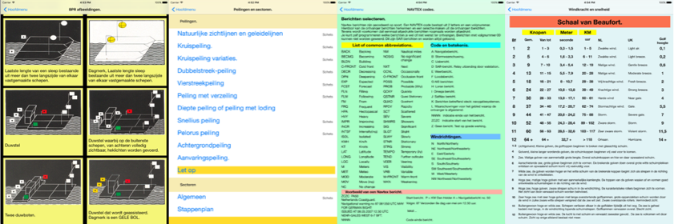

Wat ons bij SwiftDev.nl vooral fascineert is de veelzijdigheid van de apps waarmee onze leden al in de AppStore aanwezig zijn of de apps die zij momenteel ontwikkelen. Na een app voor iPhone en Apple Watch etaleren wij nu een app waarvoor de iPad schijnbaar gemaakt is. Aan het woord komt nu de bedenker en maker van LogSave: Jan Pollaert.
In november 2014 heb ik me aangemeld bij de iOS Academie. Ik heb daar alle boeken gekocht, de video’s bekeken en ben hierover zeer tevreden. Naarmate ik steeds verder kwam, gingen Xcode en Swift mij steeds meer boeien. Zodanig zelfs dat ik besloot om een app te maken.
Als gepassioneerd zeezeiler heb ik geconstateerd dat de meeste schippers in het bezit zijn van een boekwerk(je) waarin ze aantekeningen van hun reizen bewaren. Ik gebruikte daarvoor een dikke map van Time Manager. Op de navigatietafel lag deze map altijd naast de zeekaart(en) om als mijn naslagwerk voor het berekenen van koersen, getijden, stromingen, peilingen, communicatie, seinen enz. te gebruiken. Het leek mij een goed idee om, als startproject, vanuit mijn eigen aantekeningen alle relevante informatie te verzamelen, deze te structureren en waar nodig aan te vullen. Met als ultiem doel alle loggegevens in één app vast te leggen. Onderzoek leerde mij dat er nog geen enkele app werd aangeboden waarin schippers hun eigen, complete zeilhistorie integraal in één app konden bijhouden.
Nu het idee er was, moest ik mijn koers bepalen. Hoe ging ik deze app bouwen?
Mijn snelste vorm van leren was om vanuit een ontwerp (dat je toch steeds weer aanpast) van start te gaan. Tijdens het bouwen stuit je op specifieke problemen die je op dat moment moet uitzoeken en oplossen. Je focust je steeds op één item. Des te meer problemen je met het ontwikkelen tegenkomt, des te breder en dieper je kennis groeit.
Ik heb voor een logische visuele opzet gekozen die dicht bij de oorspronkelijke bron ligt. Je loopt als het ware door je eigen map. De app begint met een introductie scherm (VC) met imageView, gesture, labels en een knop. Van hier ga je via de knop Voorwoord of klik op het scherm (gesture) naar het Hoofdmenu in een tableView. In het Hoofdmenu staan 9 secties, die je elk naar een desbetreffende subview loodsen. In deze subviews heb ik naar behoefte viewControllers, tableViewControllers, Collection Views, Text Views en UIPopOverControllers toegepast.
Per scherm werd ik uitgedaagd met de vele mogelijkheden binnen Swift (via import Foundation, seques, delegation en protocols) steeds weer een passende oplossing te vinden. Als ik deze oplossing niet zelf kon vinden, zocht ik hulp op forums, via YouTube films (vaak minder relevant) of in de zeer uitgebreide Apple User Guides. Specifieke functies, berekeningen en toepassingen bewaar ik -voor later hergebruik- in een bibliotheek.
Wat zou ik de volgende keer anders doen?
Ten eerste zou ik de app alleen in landscape mode bouwen, nadat ik heb gemerkt dat veel gebruikers de iPad op een “voetje” liggend gebruiken. Ook zou ik de app vanuit het MVC principe gaan ontwikkelen. Wellicht dat ik deze app nog eens ombouw.
Voor navigatie gebruiken veel schippers hun iPad al voor de prima zeekaarten van o.a. Navionics. De meeste zeezeilers hebben een behoorlijk opleidingstraject doorlopen en zullen zich met LogSave gesteund voelen in de uitvoering van hun hobby. In de AppStore staat voor zeezeilers nu een goed werkende app van 62 Mb. LogSave maakt de schat aan informatie over hun eigen reizen in een digitaal naslagwerk (O, ja ik weet het weer!) beschikbaar. LogSave is door mij voor (collega) zeezeilers gebouwd, die ik van harte uitnodig met mij mee te denken voor eventuele verbeteringen en uitbreidingen. Voor wie meer wil weten: op mijn eigen website www.pollapp.nl vind je een korte uitleg over hoe de app zo effectief mogelijk gebruikt wordt.
Het plezier dat ik tijdens het ontwikkelen van LogSave heb opgebouwd, heeft tot een tweede “zeil” app in de AppStore geleid, onder de naam Logboek. Een goede combinatie van beide apps zorgt aan boord voor een optimale veiligheid en verslaglegging.